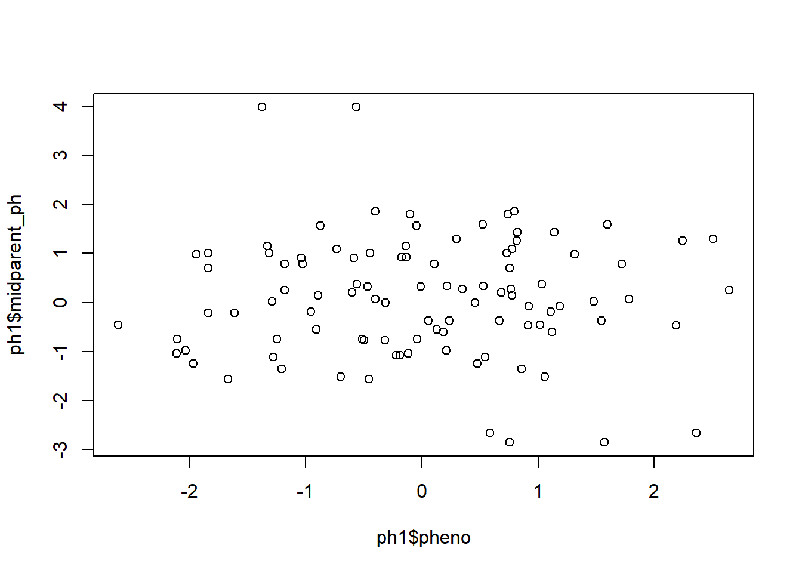

Last updated: 2025-02-04
Checks: 6 1
Knit directory: myporject1/
This reproducible R Markdown analysis was created with workflowr (version 1.7.1). The Checks tab describes the reproducibility checks that were applied when the results were created. The Past versions tab lists the development history.
The R Markdown is untracked by Git. To know which version of the R
Markdown file created these results, you’ll want to first commit it to
the Git repo. If you’re still working on the analysis, you can ignore
this warning. When you’re finished, you can run
wflow_publish to commit the R Markdown file and build the
HTML.
Great job! The global environment was empty. Objects defined in the global environment can affect the analysis in your R Markdown file in unknown ways. For reproduciblity it’s best to always run the code in an empty environment.
The command set.seed(20250127) was run prior to running
the code in the R Markdown file. Setting a seed ensures that any results
that rely on randomness, e.g. subsampling or permutations, are
reproducible.
Great job! Recording the operating system, R version, and package versions is critical for reproducibility.
Nice! There were no cached chunks for this analysis, so you can be confident that you successfully produced the results during this run.
Great job! Using relative paths to the files within your workflowr project makes it easier to run your code on other machines.
Great! You are using Git for version control. Tracking code development and connecting the code version to the results is critical for reproducibility.
The results in this page were generated with repository version 9d6d2ec. See the Past versions tab to see a history of the changes made to the R Markdown and HTML files.
Note that you need to be careful to ensure that all relevant files for
the analysis have been committed to Git prior to generating the results
(you can use wflow_publish or
wflow_git_commit). workflowr only checks the R Markdown
file, but you know if there are other scripts or data files that it
depends on. Below is the status of the Git repository when the results
were generated:
Ignored files:
Ignored: .Rhistory
Ignored: .Rproj.user/
Untracked files:
Untracked: analysis/Lab3_ProgrammingAlphaSimR.Rmd
Untracked: code/addToREADME.R
Untracked: output/QTLgenotypes.csv
Unstaged changes:
Modified: analysis/MatrixAlgebra.Rmd
Note that any generated files, e.g. HTML, png, CSS, etc., are not included in this status report because it is ok for generated content to have uncommitted changes.
There are no past versions. Publish this analysis with
wflow_publish() to start tracking its development.
This lab is written in Rmarkdown. I find it challenging to remember the syntax, but here is a cheatsheet
workflowrhere to make file locations relative to
the base project folderAlphaSimR
AlphaSimR is a package to simulate breeding populations and
tasks. It is not completely intuitive nor completely well-documented. We
will want to use it ultimately to optimize breeding schemes. As a way to
introduce AlphaSimR, this Rmarkdown script contains code to illustrate
the “outbreak of variation” that occurs when a heterozygous individual
is self-fertilized. This phenomenon was important in supporting the
notion that quantitative traits were influenced by many loci. Here is an
introduction
showing code to simulate a very simple mass selection program. Here is a
deep
dive into how AlphaSimR simulates traits.
Prepare a Homework
Your homework will be to write a script that illustrates the interesting
phenomenon of regression toward the mean between parents and progeny
that we discussed in class.
It’s good to have all scripts in the same order with respect to standard tasks
If your script depends on external packages, load them at the beginning. This shows users early on what the script dependencies are.
packages_used <- c("AlphaSimR", "tidyverse", "workflowr", "here")
ip <- installed.packages()
all_packages_installed <- TRUE
for (package in packages_used){
if (!(package %in% ip[,"Package"])){
print(paste("Please install package", package))
all_packages_installed <- FALSE
}
}#END packages_used
if (!all_packages_installed) stop("Need to install packages")
library(tidyverse)── Attaching core tidyverse packages ──────────────────────── tidyverse 2.0.0 ──
✔ dplyr 1.1.4 ✔ readr 2.1.5
✔ forcats 1.0.0 ✔ stringr 1.5.1
✔ ggplot2 3.5.1 ✔ tibble 3.2.1
✔ lubridate 1.9.4 ✔ tidyr 1.3.1
✔ purrr 1.0.2
── Conflicts ────────────────────────────────────────── tidyverse_conflicts() ──
✖ dplyr::filter() masks stats::filter()
✖ dplyr::lag() masks stats::lag()
ℹ Use the conflicted package (<http://conflicted.r-lib.org/>) to force all conflicts to become errorsNotice the conflicts report from loading tidyverse. Two packages
(dplyr and stats) both have a function called
filter. Since dplyr was loaded after stats, if you
use the function filter, it will go to the dplyr version.
It is dangerous to rely on what order packages have been loaded to
determine which filter function you get. R syntax to
prevent ambiguity is to write either dplyr::filter or
stats::filter. Using that syntax will make your code more
reproducible.
herehere::i_am("analysis/Lab3_ProgrammingAlphaSimR.Rmd")There are two functions I use in the here package:
here::i_am and here::here.
here::i_am helps here “understand” the folder
structure. You give it the name of the script that is currently running,
and the path to that script from the base of the overall analysis
folder. From that, here deduces where the base of the
folder is. After that, here::here locates files from that
folder base. If you use the here package, you can send
anyone a complicated zipped folder, and they should be able to run the
analysis out of the box, regardless of where they put the folder in
their own file system.
This chunk creates a “README.md” file that documents the packages and versions used for future reference.
source(here::here("code/addToREADME.R"))
addToREADME(paste0("## ", rmarkdown::metadata$title), append=F)
addToREADME(c(date(), ""))
packages_info <- ip[packages_used, c("Package", "Version", "Built")]
addToREADME(c("The packages used in this script are:", "Package, Version, Built"))
apply(packages_info, 1, function(vec) addToREADME(paste(vec, collapse=" "))) AlphaSimR tidyverse workflowr
"AlphaSimR 1.6.1 4.4.2" "tidyverse 2.0.0 4.4.2" "workflowr 1.7.1 4.4.2"
here
"here 1.0.1 4.4.2" addToREADME("")Hyperlink the README file to the report. That makes it easy to find.
AlphaSimR generates many random numbers (e.g., to simulate Mendelian
random segregation). If you want the result of the analysis to come out
the same each time (there are pros and cons) you need to set the random
seed. Note that workflowr does this by default. If you are
not using that package, then be explicit.
random_seed <- 45678
set.seed(random_seed)
addToREADME(c(paste("The random seed is", random_seed), ""))If the behavior of your script depends on parameters that you set, initialize them early on.
nFounders <- 100
nChr <- 10 # Number of chromosomes
nSitesPerChr <- 1000 # Number of segregating sites _per chromosome_
nQTLperChr <- 10 # Vary this parameter to get oligo- versus poly- genic traits
nF1s <- 200 # We are going to make F1s to test outbreak of variation
nF2s <- 200 # We are going to make F2s to test outbreak of variationIllustrate regression to the mean between parents and offspring using
AlphaSimR
1. You know how to create a population – create a population of
parents
nFounders <- 2000
nChr <- 10 # Number of chromosomes
nSitesPerChr <- 1000 # Number of segregating sites _per chromosome_
nQTLperChr <- 10 # Vary this parameter to get oligo- versus poly- genic traitsCreating a founder population
founderHaps <- AlphaSimR::runMacs(nInd=nFounders, nChr=nChr,
segSites=nSitesPerChr)
SP <- AlphaSimR::SimParam$new(founderHaps)
SP$addTraitA(nQtlPerChr=nQTLperChr)
founders <- AlphaSimR::newPop(founderHaps, simParam=SP)
str(founders)Formal class 'Pop' [package "AlphaSimR"] with 18 slots
..@ id : chr [1:2000] "1" "2" "3" "4" ...
..@ iid : int [1:2000] 1 2 3 4 5 6 7 8 9 10 ...
..@ mother : chr [1:2000] "0" "0" "0" "0" ...
..@ father : chr [1:2000] "0" "0" "0" "0" ...
..@ sex : chr [1:2000] "H" "H" "H" "H" ...
..@ nTraits: int 1
..@ gv : num [1:2000, 1] 0.638 -1.0753 -1.0241 -0.0391 -2.1097 ...
.. ..- attr(*, "dimnames")=List of 2
.. .. ..$ : NULL
.. .. ..$ : chr "Trait1"
..@ pheno : num [1:2000, 1] NA NA NA NA NA NA NA NA NA NA ...
.. ..- attr(*, "dimnames")=List of 2
.. .. ..$ : NULL
.. .. ..$ : chr "Trait1"
..@ ebv : num[1:2000, 0 ]
..@ gxe :List of 1
.. ..$ : NULL
..@ fixEff : int [1:2000] 1 1 1 1 1 1 1 1 1 1 ...
..@ misc : list()
..@ miscPop: list()
..@ nInd : int 2000
..@ nChr : int 10
..@ ploidy : int 2
..@ nLoci : int [1:10] 1000 1000 1000 1000 1000 1000 1000 1000 1000 1000
..@ geno :List of 10
.. ..$ : raw [1:125, 1:2, 1:2000] a4 61 22 d8 ...
.. ..$ : raw [1:125, 1:2, 1:2000] 42 c0 38 20 ...
.. ..$ : raw [1:125, 1:2, 1:2000] 0e 25 42 29 ...
.. ..$ : raw [1:125, 1:2, 1:2000] 38 10 01 d9 ...
.. ..$ : raw [1:125, 1:2, 1:2000] a4 b0 ce 01 ...
.. ..$ : raw [1:125, 1:2, 1:2000] 62 0b 00 82 ...
.. ..$ : raw [1:125, 1:2, 1:2000] 30 23 80 98 ...
.. ..$ : raw [1:125, 1:2, 1:2000] 29 20 b2 00 ...
.. ..$ : raw [1:125, 1:2, 1:2000] 22 44 08 00 ...
.. ..$ : raw [1:125, 1:2, 1:2000] 07 6f 4b 04 ...Self fertilize the founders for some generations to get the parents
nGenSelf <- 3
inbredPop <- founders
for (gen in 1:nGenSelf){
inbredPop <- AlphaSimR::self(inbredPop)
}qtl <- AlphaSimR::pullQtlGeno(inbredPop)
if (nrow(qtl) != nFounders) stop("The number of individuals is unexpected")
if (ncol(qtl) != nChr * nQTLperChr) stop("The number of QTL is unexpected")
fracHet <- sum(qtl == 1) / (nFounders * nChr * nQTLperChr)
cat("Expected fraction heterozygous", 1 / 2^nGenSelf, "\n",
"Observed fraction heterozygous", fracHet, "+/-",
round(2*sqrt(fracHet*(1-fracHet)/(nFounders*nChr*nQTLperChr)), 3), "\n")Expected fraction heterozygous 0.125
Observed fraction heterozygous 0.030415 +/- 0.001 randomparents <- inbredPop[sample(nFounders, 100)]
inbredPop <- AlphaSimR::setPheno(inbredPop, varE=0.2)crossPlan
matrix like I did to generate the F1s, except that each row should have
randomly-picked parents, rather than 1 and 2 like for the F1s. There is
also a command AlphaSimR::randCross. Check out its
documentation. If you use that command, you will have to find the
pedigree of the progeny using the @mother and
@father ids of the progeny population and match those up to
the parent population. If you make the crossPlan, then it gives you the
seed and pollen parent ids.parents<- rep(1:100, 1)
crossPlan <- matrix(rep(sample(parents, 100), 2), ncol=2, byrow=T)
random_mate <- AlphaSimR::makeCross(randomparents, crossPlan)
head(crossPlan) [,1] [,2]
[1,] 48 16
[2,] 51 3
[3,] 49 38
[4,] 92 78
[5,] 4 39
[6,] 1 63random_mate <- AlphaSimR::setPheno(random_mate, varE=0.2)crossPlan to find the two parents
and calculate their phenotypic mean#preparing the crossplan parents info
crossPlan<- as.data.frame(crossPlan)
colnames(crossPlan)<- c("GID1", "GID2")
#preparing the crossplan phenotype info
phen<- as.data.frame(AlphaSimR::pheno(inbredPop))
phen$GID1<- rownames(phen)
phen$GID2<- rownames(phen)
#Extracting the parent 1 phenotype
ph1<- merge(crossPlan, phen[,-3], by= "GID1")
colnames(ph1)[3]<- "parent1ph"
#Extracting the parent 2 phenotype
ph1<- merge(ph1, phen[,-2], by= "GID2")
colnames(ph1)[4]<- "parent2ph"
#calculating the midparent value
ph1$midparent_ph<- (ph1$parent1ph + ph1$parent2ph)/2
ph1<- ph1[,c(-3,-4)]
ph1 GID2 GID1 midparent_ph
1 2 37 -0.750078949
2 2 37 -0.750078949
3 3 51 -0.767675218
4 3 51 -0.767675218
5 6 20 1.291346005
6 6 20 1.291346005
7 8 81 0.141997616
8 8 81 0.141997616
9 9 64 -2.850423127
10 9 64 -2.850423127
11 11 15 -0.973067178
12 11 15 -0.973067178
13 12 65 1.560659506
14 12 65 1.560659506
15 16 48 0.788139257
16 16 48 0.788139257
17 17 36 1.000579939
18 17 36 1.000579939
19 18 93 -0.465725852
20 18 93 -0.465725852
21 19 7 -1.107777590
22 19 7 -1.107777590
23 21 89 -1.077578839
24 21 89 -1.077578839
25 23 98 0.914704538
26 23 98 0.914704538
27 26 100 -1.554184744
28 26 100 -1.554184744
29 27 56 -0.372877788
30 27 56 -0.372877788
31 28 69 1.083963237
32 28 69 1.083963237
33 29 30 -1.514471161
34 29 30 -1.514471161
35 31 43 -0.007474224
36 31 43 -0.007474224
37 32 25 0.064275299
38 32 25 0.064275299
39 34 42 -0.599678877
40 34 42 -0.599678877
41 38 49 1.593512486
42 38 49 1.593512486
43 39 4 -1.246068592
44 39 4 -1.246068592
45 41 14 -0.215484387
46 41 14 -0.215484387
47 44 40 -0.555409287
48 44 40 -0.555409287
49 46 77 -0.365354060
50 46 77 -0.365354060
51 47 82 0.911722137
52 47 82 0.911722137
53 50 94 1.153844157
54 50 94 1.153844157
55 53 5 0.245820979
56 53 5 0.245820979
57 54 45 0.367687939
58 54 45 0.367687939
59 55 13 -0.079334199
60 55 13 -0.079334199
61 57 84 -0.449177939
62 57 84 -0.449177939
63 58 97 1.852815861
64 58 97 1.852815861
65 59 35 0.271953047
66 59 35 0.271953047
67 60 10 -0.189885527
68 60 10 -0.189885527
69 61 68 1.255093966
70 61 68 1.255093966
71 62 73 0.198840528
72 62 73 0.198840528
73 63 1 0.016361409
74 63 1 0.016361409
75 70 72 0.339617856
76 70 72 0.339617856
77 74 24 -1.036005085
78 74 24 -1.036005085
79 76 91 1.430749059
80 76 91 1.430749059
81 78 92 -1.354353750
82 78 92 -1.354353750
83 79 90 -0.740992189
84 79 90 -0.740992189
85 80 22 1.004843656
86 80 22 1.004843656
87 83 66 0.978746129
88 83 66 0.978746129
89 86 75 0.785662340
90 86 75 0.785662340
91 87 71 -2.652001225
92 87 71 -2.652001225
93 88 85 0.705375084
94 88 85 0.705375084
95 95 67 3.977502372
96 95 67 3.977502372
97 96 52 0.322003851
98 96 52 0.322003851
99 99 33 1.797023063
100 99 33 1.797023063#Adding the progeny's own phenotype
ph2<- AlphaSimR::pheno(random_mate)
ph1$pheno<- ph2
plot(ph1$pheno, ph1$midparent_ph)
cor(ph1$midparent_ph, ph1$pheno) Trait1
[1,] -0.01780952What is the regression coefficient?
How much closer to the mean are offspring, on average, compared to their parents?
I want to receive a zipped folder with your homework in it one week
from today, by midnight. If you use the workflowr package
to create the folder structure, that’s great. You should have created an
Rmarkdown script that will create an html file that I can look through.
So:
1. 4 points for just sending in a zipped folder on time
2. 1 points for each successful step from above, with partial
credit
3. I will subtract 0.5 points for every day the homework is late
sessionInfo()R version 4.4.2 (2024-10-31 ucrt)
Platform: x86_64-w64-mingw32/x64
Running under: Windows 11 x64 (build 22621)
Matrix products: default
locale:
[1] LC_COLLATE=Estonian_Estonia.utf8 LC_CTYPE=Estonian_Estonia.utf8
[3] LC_MONETARY=Estonian_Estonia.utf8 LC_NUMERIC=C
[5] LC_TIME=Estonian_Estonia.utf8
time zone: America/New_York
tzcode source: internal
attached base packages:
[1] stats graphics grDevices utils datasets methods base
other attached packages:
[1] lubridate_1.9.4 forcats_1.0.0 stringr_1.5.1 dplyr_1.1.4
[5] purrr_1.0.2 readr_2.1.5 tidyr_1.3.1 tibble_3.2.1
[9] ggplot2_3.5.1 tidyverse_2.0.0
loaded via a namespace (and not attached):
[1] sass_0.4.9 generics_0.1.3 stringi_1.8.4 hms_1.1.3
[5] digest_0.6.37 magrittr_2.0.3 evaluate_1.0.3 grid_4.4.2
[9] timechange_0.3.0 fastmap_1.2.0 rprojroot_2.0.4 workflowr_1.7.1
[13] jsonlite_1.8.9 promises_1.3.2 scales_1.3.0 jquerylib_0.1.4
[17] Rdpack_2.6.2 cli_3.6.3 crayon_1.5.3 rlang_1.1.5
[21] rbibutils_2.3 bit64_4.6.0-1 munsell_0.5.1 withr_3.0.2
[25] cachem_1.1.0 yaml_2.3.10 AlphaSimR_1.6.1 parallel_4.4.2
[29] tools_4.4.2 tzdb_0.4.0 colorspace_2.1-1 httpuv_1.6.15
[33] here_1.0.1 vctrs_0.6.5 R6_2.5.1 lifecycle_1.0.4
[37] git2r_0.35.0 bit_4.5.0.1 fs_1.6.5 vroom_1.6.5
[41] pkgconfig_2.0.3 pillar_1.10.1 bslib_0.8.0 later_1.4.1
[45] gtable_0.3.6 glue_1.8.0 Rcpp_1.0.14 xfun_0.50
[49] tidyselect_1.2.1 rstudioapi_0.17.1 knitr_1.49 htmltools_0.5.8.1
[53] rmarkdown_2.29 compiler_4.4.2